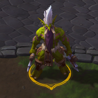
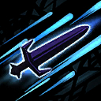
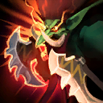
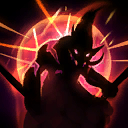
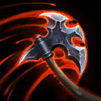

Zul'jin
Welcome to our Zul'jin guide for Heroes of the Storm. Here you will learn everything you need to know in order to play Zul'jin in a competitive environment, whether you play on your own or with a team.
Basic Attack Build
| Level 1 | Level 4 | Level 7 | Level 10 | Level 13 | Level 16 | Level 20 |
|---|---|---|---|---|---|---|
 |
 |  |  |  |
The Basic Attack Build focuses on maximizing the effectiveness of Zul'jin's core mechanic Berserker Icon Berserker, and the insanely high single-target damage output he is able to maintain with his Basic Attacks. The 20% increase in Basic Attack range provided by You Want Axe? Icon You Want Axe? is integral in allowing Zul'jin to continually rain Basic Attacks down onto his opponents without compromising his positioning. The combination of Recklessness Icon Recklessness, Taz'dingo! Icon Taz'dingo!, and Ferocity Icon Ferocity will cause Zul'jin to tear through his opponents as both his Attack Speed and Attack Damage will be phenomenal for Taz'dingo's entire duration should be become the target of the enemy focus. Amani Resilience Icon Amani Resilience provides Zul'jin with a much needed boost of survivability for when the Unkillable effect of Taz'dingo wears off.
Go Back